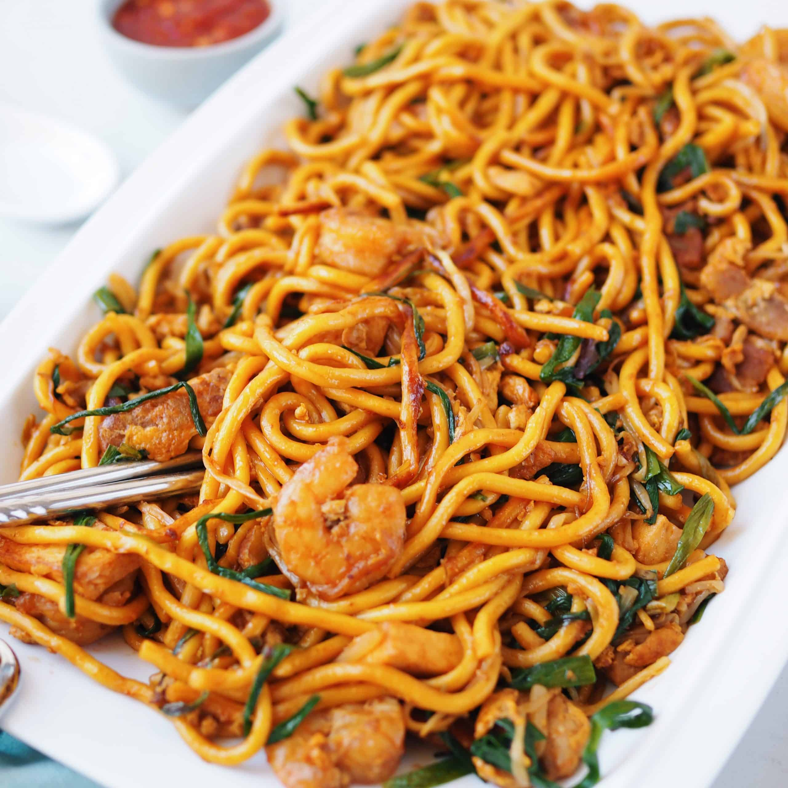

Mee Goreng

Description
Mee Goreng, aka fried egg noodles, is simply heaven on a plate.
It's a dish that is spicy, sweet, salty and ever other flavour
combined. Suitable for both vegans and meat lovers alike, this dish
is a guaranteed crowd pleaser!
Ingredients Required
- Yellow noodles
- Dried chilies
- Fried bean curd or firm tofu
- Potato
- Squid
- Bean sprouts
- Eggs
- Soy sauce
- Sweet soy sauce or kecap manis.
- Ketchup
- Fresh limes
Steps
- Combine all the ingredients in Chili Paste and
blend well using a food processor.
- Heat a wok and add "tumis" or stir fry the
Chili Paste until the oil separates from chili.
Set aside.
- In a small bowl, combine all the ingredients of
the Sauce together. Set aside.
- Heat up a wok on high heat and add 2 tablespoons of
cooking oil. Add the garlic, 3 tablespoons of Chili Paste,
potatoes, bean curd and squid. Stir fry until fragrant.
Add the yellow noodles and the Sauce and continue stirring.
Push the noodles to the side of the wok
- Add the remaining 1/2 tablespoon cooking oil and crack
the eggs on top of the oil. Scramble the eggs and mix
in with the noodles. Add the bean sprouts and quick stir
for about 1 minute
- Dish out and garnish with sliced lettuce leaves and
lime wedges. Squeeze some lime juice all over the noodles
before serving